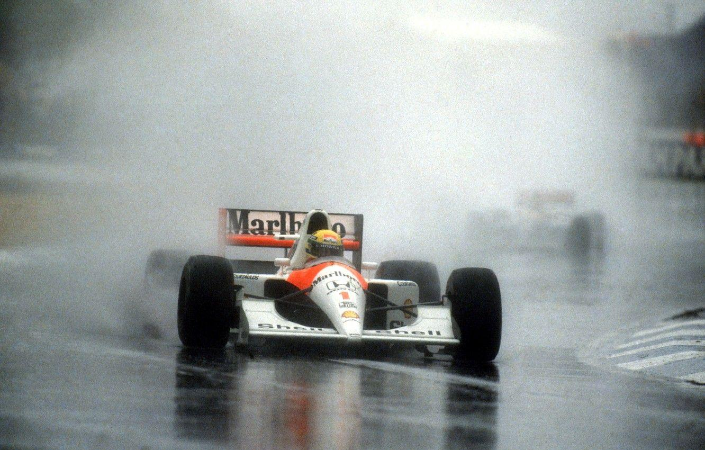

Senna era apodado “el rey de la lluvia” por su habilidad excepcional en condiciones húmedas. Una de sus carreras más legendarias fue el Gran Premio de Mónaco de 1984, donde, con un coche inferior y en lluvia intensa, pasó de la posición 13° a 2°, casi ganando la carrera antes de que fuera detenida.
Después de cada victoria, Senna solía sacar una bandera brasileña dentro del coche durante la vuelta de celebración. Comenzó a hacerlo como muestra de orgullo nacional y apoyo a su país en momentos difíciles..
Durante pruebas neurológicas realizadas en su época en McLaren, los médicos descubrieron que Senna tenía reflejos y coordinación visomotora muy por encima del promedio humano. Tenía una increíble capacidad para procesar información visual a gran velocidad, lo que explicaba parte de su talento natural en pista.
